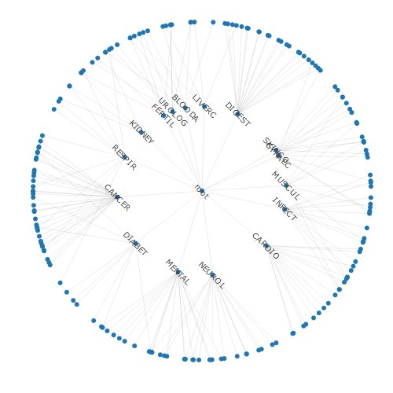
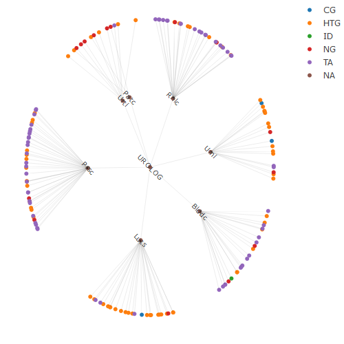
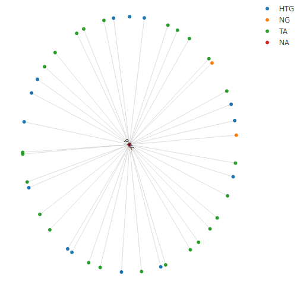

The goal of visNICE is to display the a list publications produced by NICE (UK National Institute for Health and Care Excellence) in the form of network graphs. The list of publications can be found (and browsed with list boxes) at:
https://www.nice.org.uk/guidance/conditions-and-diseases
visNICE produces those results in a graphical form as an alternative means of browsing. The current version of visNICE organises the networks in the hierarchy produced by NICE.
Each NICE report has a prefix which indicates its type, as follows:
- NG - Nice Guidance
- TA - Technology Assessment
- HST - Highly Specialised Technology
- CSG - Cancer Service Guideline
- HTG - HealthTech Guidance
- CG - Clinical Guideline
Installation
You can install the development version of visNICE from GitHub with:
# install.packages("pak")
pak::pak("jnm212/visNICE")Examples
First we make a tree that holds all the information. Typing the name of the tree gives a summary of the hierarchy, including a list of nodes in the first layer:
library(visNICE)
h <- nicetree()
(h) # summarise
#>
#> total number of nodes: 4871
#> total number of levels (excluding 0):
#> number of nodes by level :
#> 0 1 2 3
#> 1 16 176 4679
#>
#> Root node : root ( root )
#> First layer nodes : BLOODA CANCER CARDIO DIABET DIGEST FERTIL GYNAEC INFECT KIDNEY LIVERC MENTAL MUSCUL NEUROL RESPIR SKINCO UROLOGWe could plot the whole tree, but because that operation is too time-consuming, visNICE restricts the full-tree plot to the top layers.
plot(h)
#> Plotting the whole tree is too time-consuming; restricting to upper levels
#> Remember you can hover over nodes to see text
Now we can take a ‘cutting’ from the tree, which means there is less information to display, and the whole cutting or subtree will be shown. Here we choose urological conditions (UROLOG) as the root node. First we make a new smaller tree with the cutting command, summarise it, and then plot it. When used interactively, Hovering over the nodes in the tree would show the listed reports.
h_uro <- cutting(h, "UROLOG")
h_uro
#>
#> total number of nodes: 156
#> total number of levels (excluding 0):
#> number of nodes by level :
#> 1 2 3
#> 1 7 149
#>
#> Root node : UROLOG ( Urological conditions )
#> First layer nodes : Blddc Luts Patc Prsc Rnlc Urni Urti
plot(h_uro)
#> Remember you can hover over nodes to see text
You might want to look at a ‘more specific’ node. Here we use an alternative command with a pipe (|>), to avoid creating an extra object (the smaller tree).
